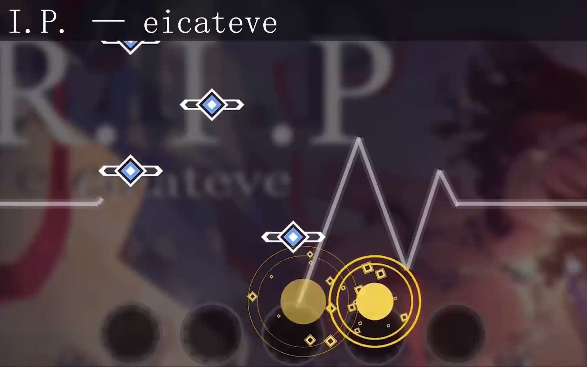
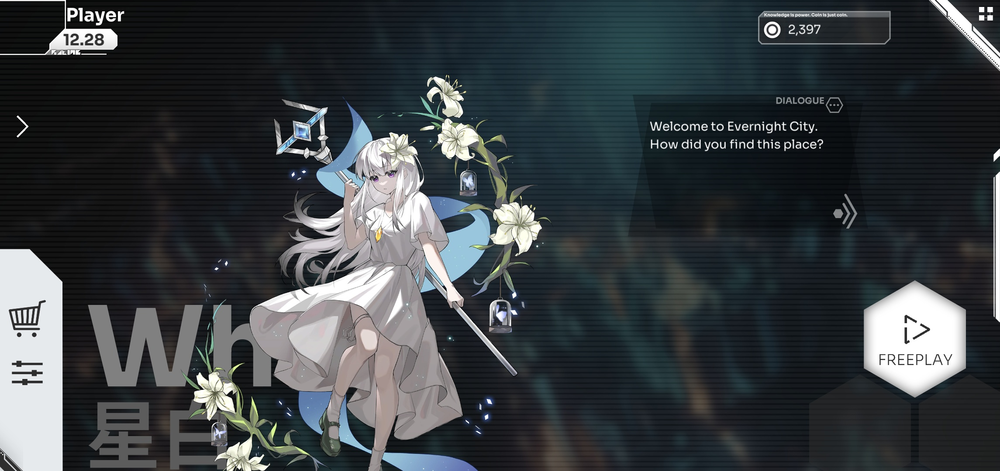
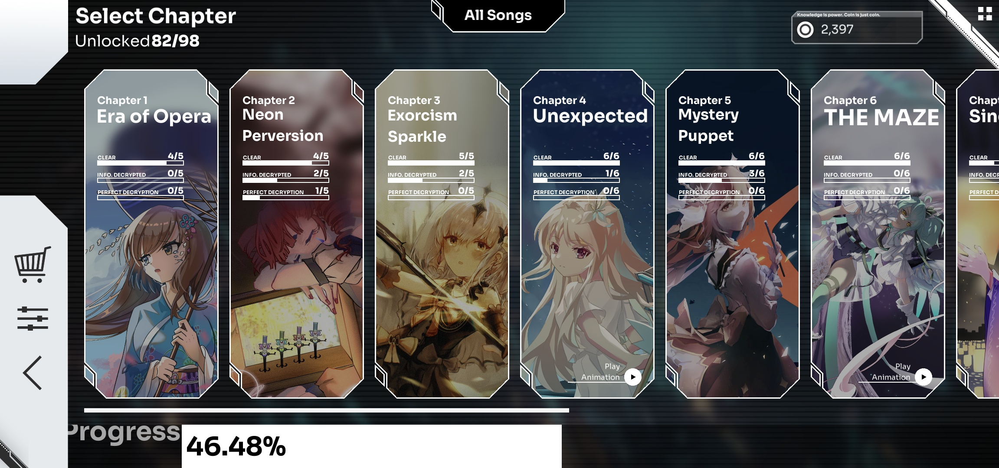
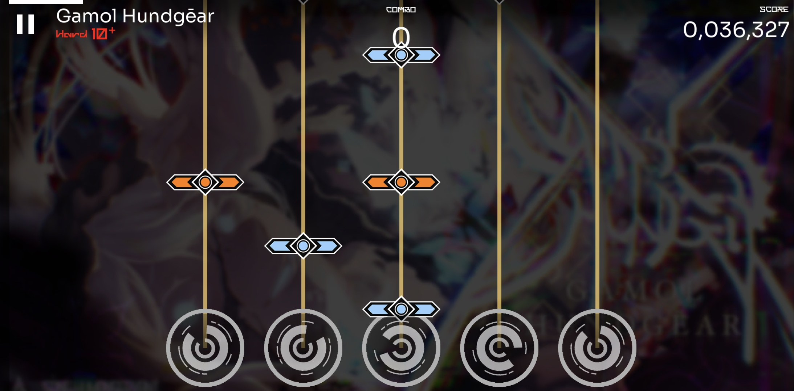
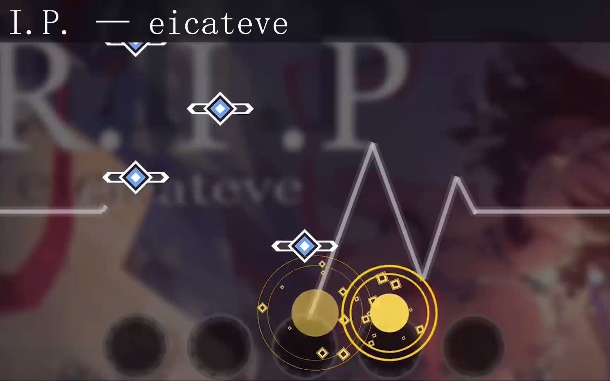
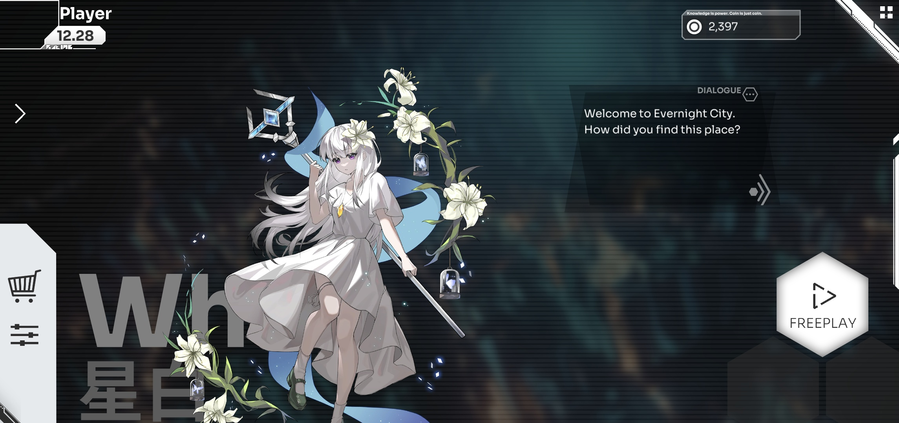
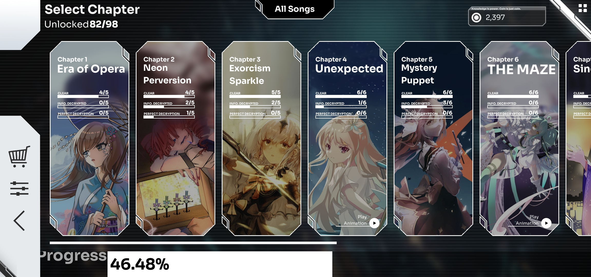
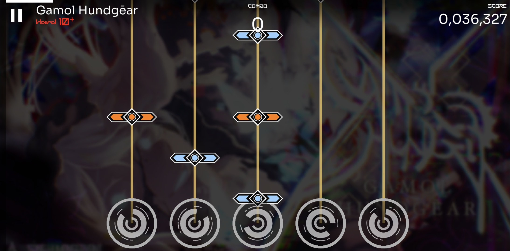

Orzmic
Un tout nouveau jeu de musique non commercial développé par BTworks, Orzmic a un gameplay polyvalent et chaque chanson a un tableau qui vous donnera une expérience de jeu unique. Orzmic inclura plus de vingt pistes de chansons de haute qualité de producteurs de musique nationaux et internationaux dans la première version, et d’autres pistes seront à venir dans les versions suivantes. Restez à l’écoute!
À propos
Ce jeu qui est aussi gratuit proposé par BTworks est un jeu de rhythme très similaire à Phigros. Elle est cependant plus dynamique et réactif que son concurent.
Gameplay
Le gameplay dans Orzmic se compose de différents types de notes descendant vers des cibles que le joueur doit frapper lorsque les notes atteignent.
Il y 3 types de notes dans ce jeu :
- Tap : Appuyez sur lorsqu'ils atteignent la ligne de jugement
- Hold : Appuyez dessus lorsqu'ils atteignent la cible, puis maintenez-les enfoncés jusqu'à ce qu'ils franchissent complètement cible
- Drag : Maintenez lorsqu'ils atteignent la cible
Il existe 2 types de cible :
- Cercle : Appuyez / Maintenez lorsque la note atteint le bord du cercle
- Ligne : Appuyez/ Maintenez enfoncée lorsque la note atteint la ligne
Il peut y avoir plusieurs cibles et les notes peuvent s’approcher de n’importe quel côté de la cible. Ils peuvent également tourner, changer d’opacité, changer de couleur et se déplacer sur le terrain de jeu. Les notes peuvent également modifier l’opacité. Il y a aussi des notes qui n’ont pas besoin d’être frappées du tout, généralement utilisées comme décoration ou comme guide pour savoir quand frapper d’autres notes.
Système de jugement
Lorsque vous frappez une note, le résultat sera l’un des deux jugements différents, stable ou perturbé, en fonction de la précision du moment où le coup a été chronométré, ou erreur si la note n’a pas été touchée du tout. Chaque jugement attribuera une certaine note. Les fenêtres de minutage changent selon que le mode Facile, Difficile ou Facile est sélectionné. En mode Facile, il est impossible d’obtenir le jugement Perturbé, seuls les jugements Stable et Erreur sont possibles.
| Jugement | Valeur en points | Fenêtre de synchronisation (Easy-) | Fenêtre de synchronisation (facile) | Fenêtre de synchronisation (difficile) |
|---|---|---|---|---|
| Stable | 100% | ±150 ms | ±96 ms | ±72 ms |
| Perturbé | 40% | N/A | ±150 ms | ±120 ms |
| Erreur | 0% | N/A | N/A | N/A |
Les notes de diapositive sont incapables de donner des jugements perturbés, de sorte qu’elles entraîneront toujours une stabilité ou une erreur.
Il y a aussi un modificateur aux jugements Stable et Disturbed, appelé Max. Contrairement aux jugements mentionnés ci-dessus, Max est basé sur la proximité du centre de la note qui a été tapotée. Les fenêtres physiques, ainsi que si Max est présent, changent également selon que le mode Facile ou Difficile est sélectionné.
Aperçu du gameplay du jeu actuelle
Infos intérésantes sur le jeu
Toutes les chansons de chaque chapitre sont débloquées dès le début, à l’exception de la dernière chanson, qui est débloquée en obtenant un A sur toutes les autres chansons du chapitre (les difficultés peuvent varier). Toutes les chansons, à l’exception de la première, ont leurs difficultés difficiles débloquées au début. Ils peuvent être débloqués en obtenant un A sur la difficulté normale de la chanson ou en obtenant un A sur la difficulté difficile de la chanson précédente dans le pack.
À chaque fin d'une chapitre, le jeu possède des chansons cachés qui sont comme des niveau Boss pour débloqer le chapitre suivant (comme Phigros).